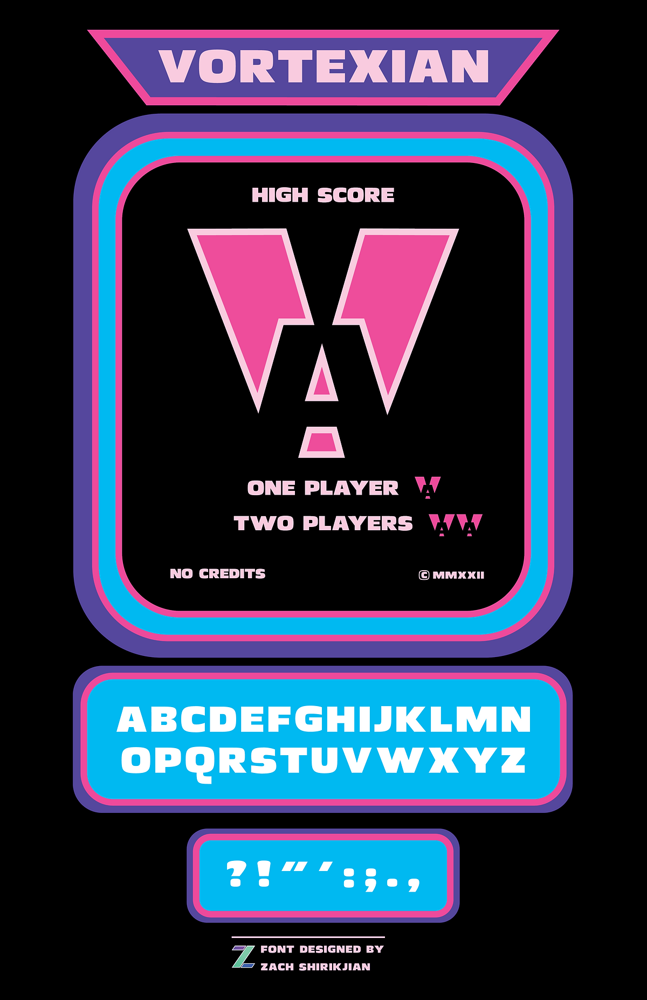
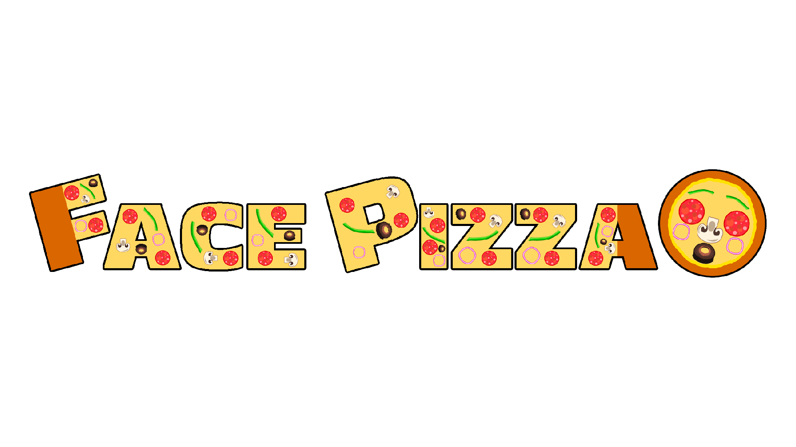
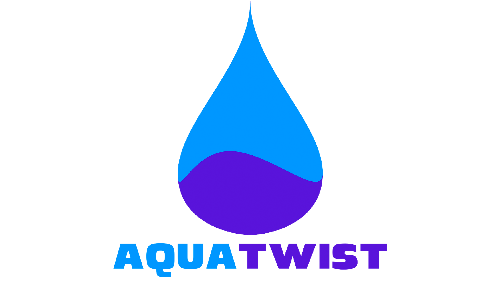
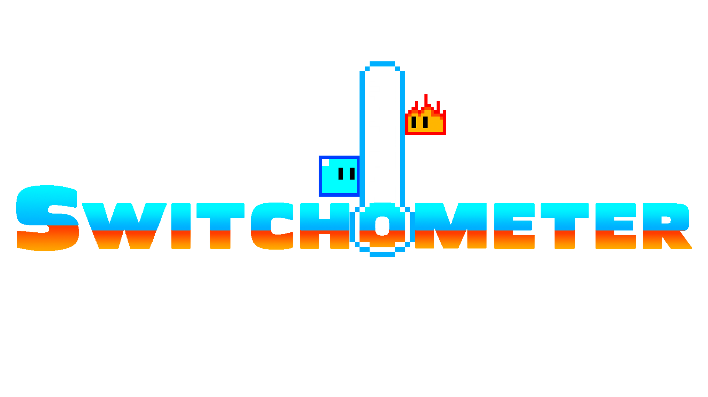

Vortexian is a typeface completed for the Typeface Design class at Fitchburg State University,
created over the course of a semester using Illustrator. Heavily influenced by Antique Olive Compact, this font evokes a sense of authority.
Its low contrast, neutral design makes it applicable for a variety of design projects. Vortexian was also inspired by classic 1980s arcade
game marketing, which was fully realized in the design for its marketing poster and logo.
Due to the large bolded letters and low-contrast, Vortexian is recommended to be used as a Display typeface, for logos or headers.
Although this font can be used for larger bodies of text, such as paragraphs, it is not recommended, due to being difficult to read
at smaller point sizes. Vortexian only includes the alphabet in uppercase letters, and a handful of punctuation marks; no numbers or
additional symbols are included.
MARKETING POSTER

EXAMPLES OF USAGE



UNIQUE FEATURES
Easy to use for multiple purposes featuring a Neutral personality.
100% Free for Personal and Commercial use.
Also includes punctuation (. , : ; ? ! " ')
WHAT I LEARNED
Designed an original Uppercase font using Illustrator.
Iterated font based on feedback from class critique.
Experienced the full development cycle for designing a typeface, including prototyping, iteration, and marketing.